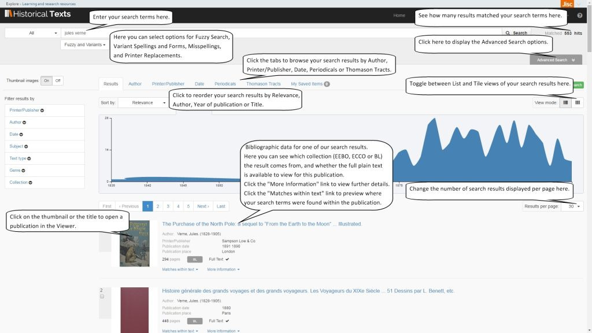
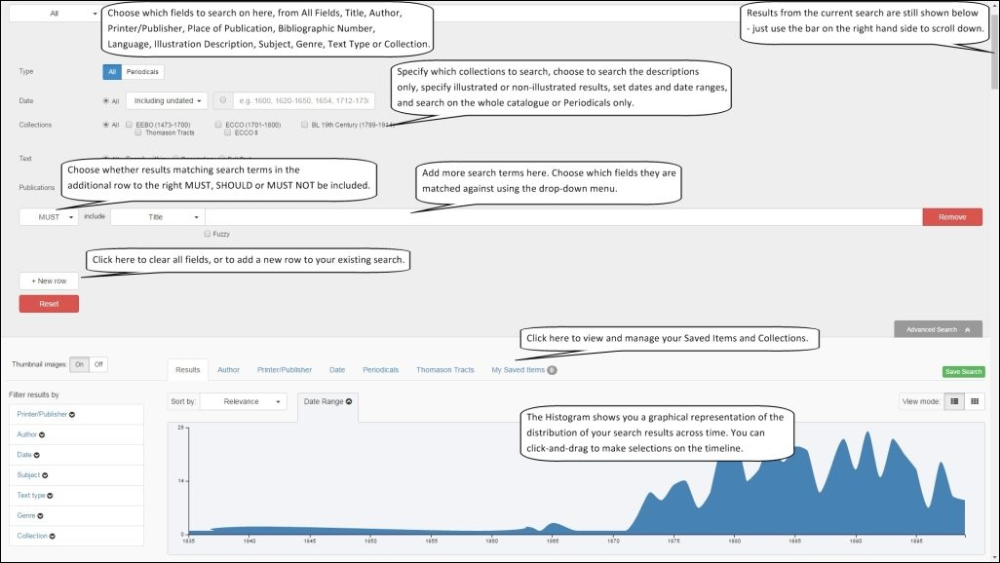
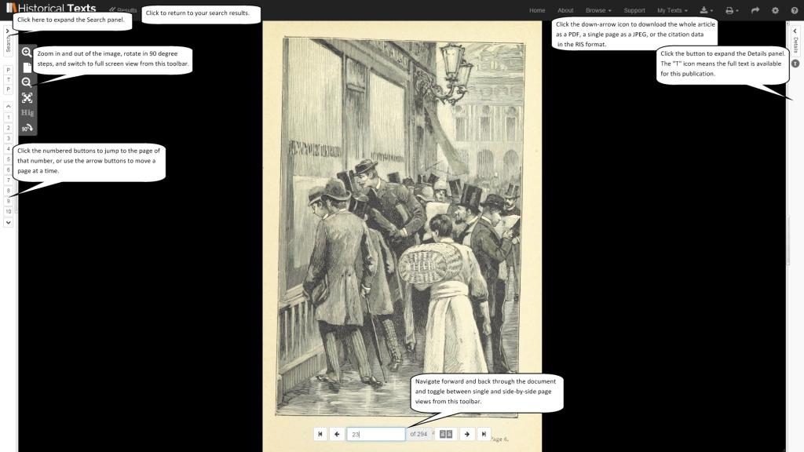
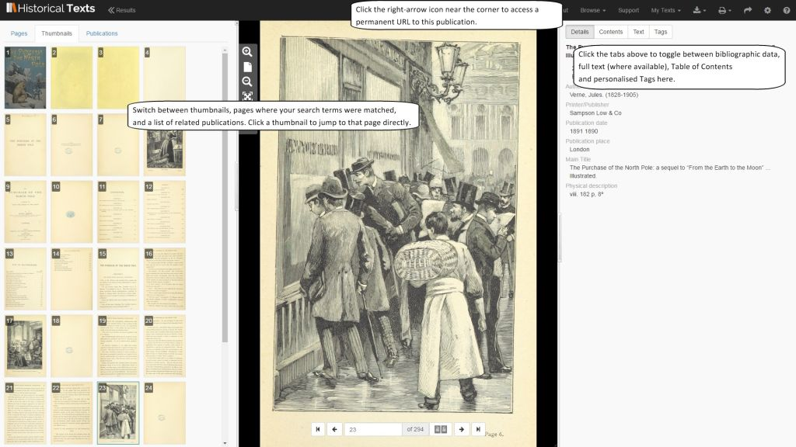

<div class="row">
    <div class="col-xs-12 topSpace">
        <div class="sideMenu">
            <div class="title">Support</div>
            <ul>
                <li><a href="/support/">Support home</a></li>
                <li><a href="/help/">Help file</a></li>
                <li><a href="/librarians/">Librarians</a></li>
                <li><a href="/faq/">FAQ</a></li>
				<li class="selected"><a href="">Quick Reference Guide</a></li>
            </ul>
        </div>

        <div class="support">

            <ol class="breadcrumb">
                <li><a href="/support/">Support home</a></li>
                <li class="active">Quick Reference Guide</li>
            </ol>

            <h1>Quick Reference Guide</h1>
            
        

<p>This is the online version of the Historical Texts Quick Reference Guide. If you wish, you can download this guide as a PDF file for offline viewing&#58; <a href="http://historicaltexts.jisc.ac.uk/files/HT-QRGv1.pdf" target="blank" title="Historical Texts Quick Reference Guide PDF"><b> Quick Reference Guide</b></a> (PDF, 858KB).</p>

<p>The Quick Reference guide will help users to get going on the Historical Texts service as quickly as possible. It isn&#39;t intended to cover every feature or possible usage scenario.</p>

<p>If you have any queries or require assistance please contact the Historical Texts helpdesk at <a href="mailto:historicaltexts@jisc.ac.uk">historicaltexts@jisc.ac.uk</a></p>

<p>Historical Texts contains three collections&#58; <a href="../about/collections#eebo">Early English Books Online &#40;EEBO&#41;</a>, <a href="../about/collections#ecco">Eighteenth Century Collections Online &#40;ECCO&#41;</a> and the <a href="../about/collections#eebo">British Library 19th Century Collection &#40;BL&#41;.</a></p>

<br />

<h2>Search View, with results shown below</h2>

<a href="../images/support/screenshots/HT-QRG1-1920px.jpg" target="_blank"></a>

<br />
<br />

<h2>Search View, expanded to show Advanced Options</h2>

<br />


<a href="../images/support/screenshots/HT-QRG2-1920px.jpg" target="_blank"></a>

<br />
<br />

<h2>Using the Viewer to look at a document</h2>

<br />

<a href="../images/support/screenshots/HT-QRG3-1920px.jpg" target="_blank"></a>

<br />
<br />

<h2>The Viewer, with the Search and Details panels open</h2>

<br />

<a href="../images/support/screenshots/HT-QRG4-1920px.jpg" target="_blank"></a>

<br />
<br />
        </div>
        </div>
    </div>g